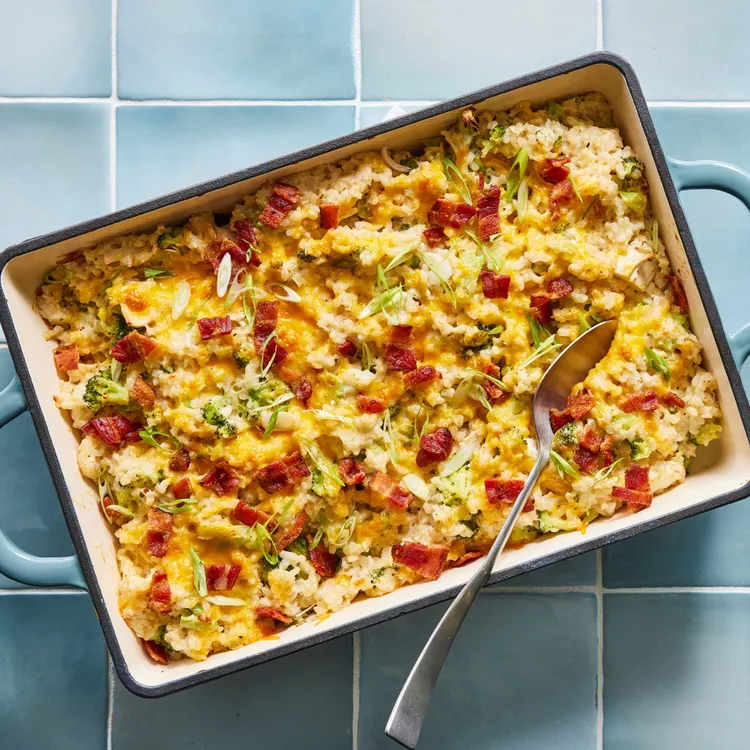

This delightfully creamy broccoli and chicken casserole is a satisfying dinner that is sure to please a crowd. To keep prep simple, look for bags of pre-cut broccoli florets. If you like a little spice, swap out the Monterey Jack cheese for pepper Jack instead.

Position oven rack about 5 inches from broiler; preheat to 375°F. Coat a broiler-safe 9-by-13-inch baking dish with cooking spray. Combine cooked rice, broccoli and broth in a large saucepan; cover and cook, undisturbed, over medium heat until all the liquid is absorbed and the broccoli is bright green and tender, 5 to 7 minutes. Remove from heat; stir and set aside.
Meanwhile, stir cream cheese, Monterey Jack, 1/4 cup Cheddar, sour cream, mustard, granulated garlic, onion powder, salt and pepper together in a large bowl until combined.
Add the broccoli mixture and chicken; fold with a rubber spatula until evenly coated and no clumps of cheese remain. Spread the mixture in the prepared baking dish; top with the remaining 1/2 cup Cheddar. Cover tightly with foil. Bake until warmed through, about 20 minutes.
Remove from oven and remove foil. Increase oven temperature to broil. Broil until the cheese is bubbling and golden brown, 3 to 4 minutes. Sprinkle with bacon and scallions.